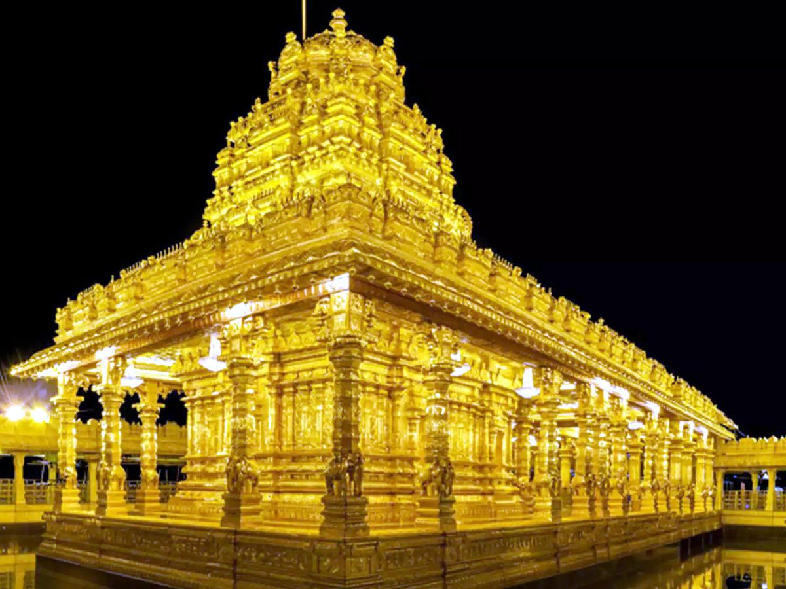

Golden Temple

Sri Lakshmi Narayani Golden Temple, located in Vellore, Tamil Nadu, spans 100 acres and is a spiritual park dedicated to Goddess Lakshmi.
It features a unique star-shaped path extending 1.8 km, guiding devotees to the main shrine adorned with 1500 kg of pure gold foil.
The temple's architecture, embodying Vedic style, incorporates intricate gold craftsmanship and serene landscaped gardens.
Built in seven years by Sri Narayani Peedam under spiritual leader Sri Sakthi Amma, it attracts thousands for spiritual solace, meditation, and blessings.
The temple is renowned as the world's largest gold-coated temple and a symbol of divine prosperity and peace.